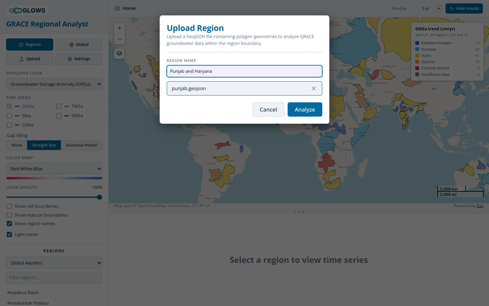
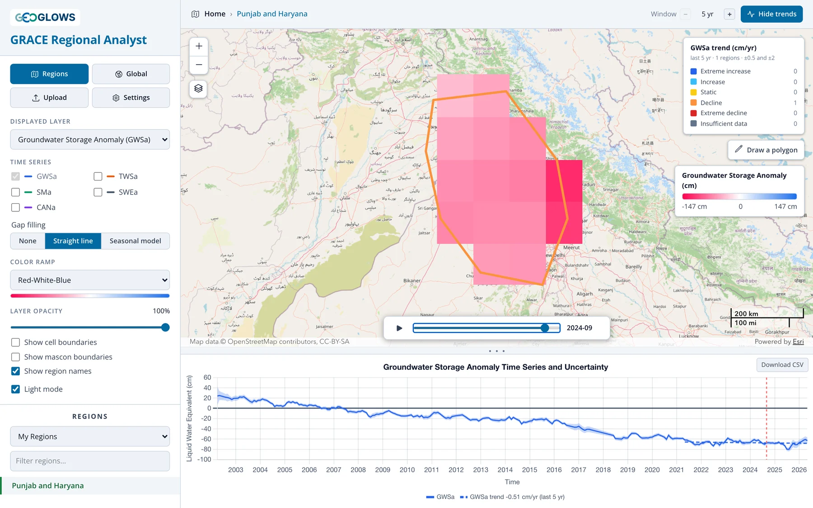
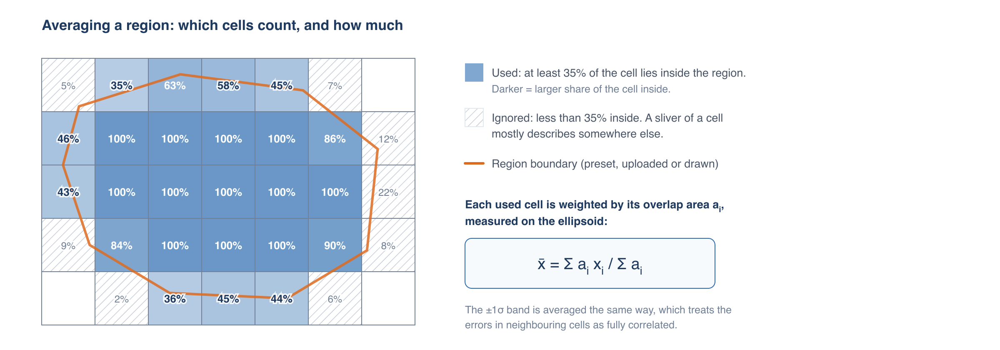
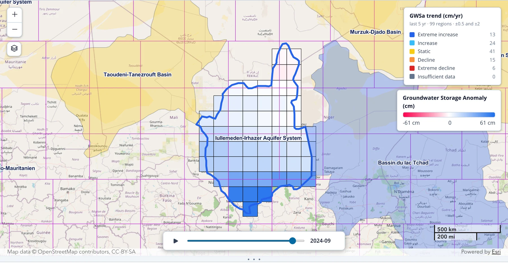
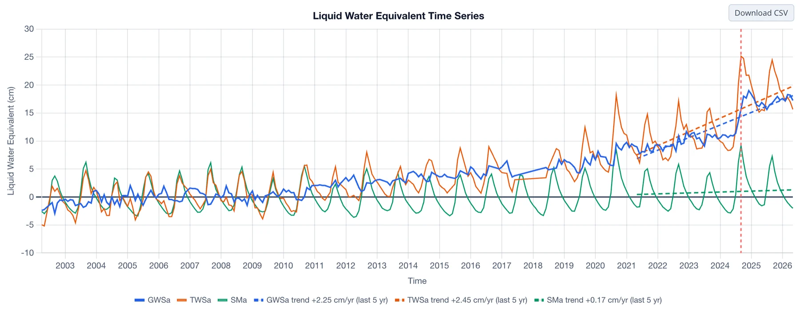

Regional View
The landing page
The app opens in the regional view, showing the outlines of every region in the active region set. The default set is Global Aquifers. Each outline is colored by the trend in groundwater storage over the last five years, and the legend in the upper right counts the regions in each trend class (see Trend Analysis). Click Hide trends to show plain outlines instead.

From here you can:
- pan and zoom the map; region names appear once you zoom in far enough (turn them off with Show region names)
- switch to another region set, or filter the list of names, in the Regions section of the control panel
- change the Displayed layer or the trend Window to reclassify every region at once, for example to see which aquifers have lost total water storage over the last 20 years
- open a region for analysis, as described below
The breadcrumb in the header reads Home on this page. After you open a region, click Home or the Regions button to come back.
Choosing a region
There are three ways to open a region for analysis:
- Click its outline on the map, or its name in the list in the control panel.
- Upload a boundary from a GeoJSON file.
- Draw a polygon on the map.
Preset region sets
Pick a set from the drop-down under Regions. Type in Filter regions… to narrow the list.
| Region set | Regions | Source |
|---|---|---|
| Global Aquifers | 99 | Compiled by the GEOGLOWS team from several sources, with gaps filled from the WHYMAP and IGRAC sets below |
| Large Aquifer Systems (WHYMAP) | 37 | Large Aquifer Systems of the World, WHYMAP (BGR/UNESCO) |
| Transboundary Aquifers (IGRAC) | 155 | Transboundary Aquifers of the World 2025, UNESCO-IHP / IGRAC (CC BY-SA 3.0 IGO) |
| Principal Aquifers, USA (USGS) | 31 | Principal Aquifers of the United States, U.S. Geological Survey |
| Major River Basins (GRDC) | 456 | Major River Basins of the World, Global Runoff Data Centre (non-commercial use only) |
| My Regions | yours | Regions you have uploaded |
The attribution for the active set is shown under the list. Cite it if you publish results based on that set.
Uploading a region
Click Upload, choose or drag in a GeoJSON file (.geojson or .json, up to 50 MB), give the region a name, and click Analyze.

The file must contain Polygon or MultiPolygon features in WGS 84 longitude and latitude, which is the GeoJSON standard. If it has more than one feature, they are merged into a single region. Holes in polygons are ignored.
Converting a shapefile
The app reads GeoJSON only. To convert a shapefile, open it in QGIS, right-click the layer, choose Export → Save Features As…, set the
format to GeoJSON and the CRS to EPSG:4326. mapshaper.org does the same in a browser: import
the .shp, .dbf and .prj files together and export as GeoJSON. Simplifying a very detailed boundary first makes the file smaller
without changing the result, since the grid cells are 1° across.
Uploaded regions are saved in My Regions, where you can open them again or delete them with the × next to the name. They are stored in your browser only: they are not shared with anyone, and they won't appear on another computer or in another browser.
Drawing a region
Select My Regions in the region set drop-down, then click Draw a polygon on the map. Click to place each corner and double-click to finish. The app analyzes the polygon straight away. Drawn polygons are not saved; upload a file if you want to keep a region.
Reading the results
When you open a region, the map zooms to it and shows the anomaly cells for the displayed layer inside its boundary, and the chart shows the region's average time series (see The time series chart).

Which cells are averaged
The regional average uses every grid cell that has at least 35% of its area inside the region, and weights each one by the area of overlap. Cells mostly outside the region are left out; cells on the edge count in proportion to how much of them is inside.

TWSa is averaged on its 0.5° grid and the other layers on their 1° grid, each with its own overlap weights. A region smaller than about 35% of one cell may have no cells that qualify; use a larger region or click the cell in the global view instead.
Showing the grid
Turn on Show cell boundaries and Show mascon boundaries to see how the region relates to the grid and to GRACE's true resolution:

Here the region spans parts of several mascons (purple), so its average draws on several independent GRACE values. A region inside a single mascon is subject to the leakage described in the background section.
The time series chart
The chart below the map plots the region's average for each month in cm of liquid water equivalent, with zero (the 2004–2009 mean) drawn as a solid line. Drag the divider between the map and the chart to give the chart more room.

Hover over the chart to read the values for a month. The red dashed line marks the month shown on the map, and it moves as you step or play the time control.
Uncertainty
When one component is plotted, a shaded band shows ±1σ. The band is averaged over the cells the same way as the values, which treats the errors in neighboring cells as fully correlated. That is the cautious choice: errors that partly cancel between cells would give a narrower band. The band is hidden when several components are plotted, to keep the chart readable.
Comparing components
The chart always plots the Displayed layer. Check other components under Time series in the control panel to add them on the same axes:
| Component | Source | What it shows |
|---|---|---|
| TWSa | GRACE | all the water in the column: groundwater, soil moisture, snow, canopy and surface water |
| GWSa | TWSa minus the three GLDAS layers | groundwater, with surface water included |
| SMa | GLDAS | soil moisture |
| SWEa | GLDAS | snow water equivalent |
| CANa | GLDAS | water held on vegetation canopies |
Deriving Groundwater Storage explains how the layers fit together.

Comparing components shows what drives the groundwater signal. In the example above, soil moisture (green) has a strong seasonal cycle but no long-term trend, while total water storage (orange) and groundwater (blue) rise together from about 2010, so the rise in total storage is groundwater.
Gap filling
GRACE has no data for 35 months of the record, so TWSa and GWSa have gaps; the GLDAS layers have a value every month. The Gap filling control sets how the chart draws the gaps:
- None breaks the line at every gap.
- Straight line joins the months on either side of each gap.
- Seasonal model estimates the missing months from a trend and seasonal cycle fitted to the region's own record, and draws them as a dashed line with open markers, as in the chart above.
The setting changes the chart only. Part 3 compares the three options in Gaps in the Record and then gives the full method.
Trend lines
While trends are on (Analyze trends in the header), each plotted component gets its fitted trend as a dashed line over the trend window, and the legend gives its slope, for example "GWSa trend −0.29 cm/yr (last 5 yr)". See Trend Analysis.
Recharge Analysis
With Seasonal model selected, a Recharge Analysis button appears above the chart. It opens a page that estimates annual groundwater recharge from the filled GWSa series with the water table fluctuation method. The analysis always uses GWSa, whichever layer is displayed. Part 4 describes it, starting with The WTF Method.
Downloading the data
Download CSV saves the monthly values of all five components for the region, with their ±1σ bounds and the gap-filled TWSa and GWSa series, whichever components are plotted and whichever gap-filling option is selected. Downloading Data lists the columns and shows how to convert the values to volumes.